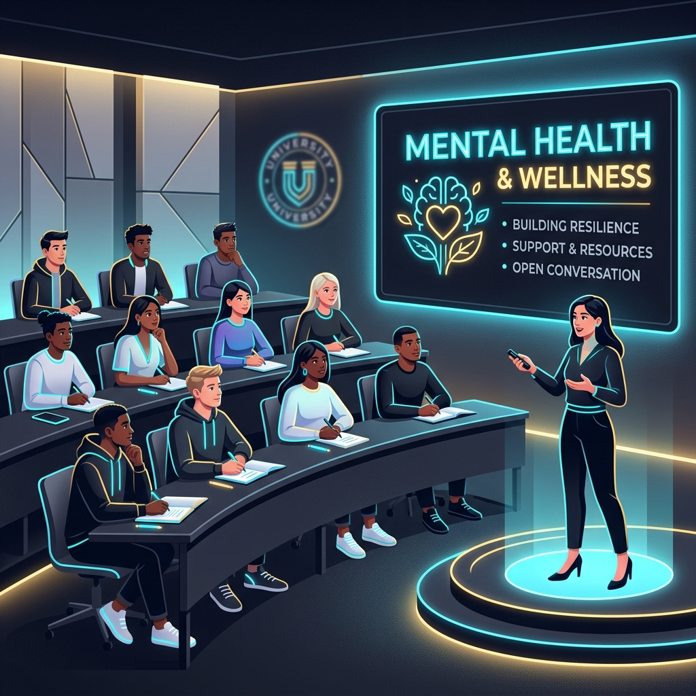

"It started with a simple hello. When I felt overwhelmed by college life, having a peer educator initiate a conversation made me feel seen. We just talked, no judgment, just warmth."
Recruitment Closed
Lead. Support. Inspire.
Join a premium network of student leaders dedicated to making a positive difference on campus. Support your peers while building core capabilities for your life ahead.
-
Empathetic Leadership: Learn to lead groups with deep empathy and active listening.
-
Crisis Counseling Bridging: Acquire key skills to guide peers to professional resources.
-
University Recognition: Earn official appreciation letters and certificates.
Note: Applications for the academic year 2026-27 are now closed.
Empathetic Peer Network
Connect with and support hundreds of students across campus blocks.
Leadership Capacities
Coordinate large events, newsletter releases, and student campaigns.
Life-Long Growth
Build life-skills that prepare you for leadership roles beyond graduation.
Community Support
You Are Not Alone
A virtual glass board of anonymous notes left by students at CHRIST. Read their words of encouragement, hope, and resilience, or see how peer support makes a difference.
"To anyone struggling: it's okay to take a break. Your mental health is more important than any grade. CCHS is there for you."
"I failed a class in my first semester and felt like a complete failure. Today I'm graduating. There is light at the end of the tunnel!"
"You don't have to carry the weight of the world by yourself. Peer Educators are always here to listen. Speak up, you are not alone."
"The best thing I did at CHRIST was walk into CCHS and ask for help. It changed the trajectory of my university life."
"Your worth is not defined by external expectations. Be kind to yourself. You are doing amazing!"
"A tiny conversation can save a life. Talk to a Peer Educator today, they are friendly, warm, and ready to help."
Leave a Word of Support (Anonymous)
Campus Presence
Visibility on Campus
How to identify and connect with Peer Educators in your academic blocks and common areas.
Peer Educator Badge
Peer Educators wear official visible badges. This improves visibility and signals approachability for any student needing assistance.

Awareness Sessions
Coordinating periodic presentations in classrooms, seminar halls, and residential blocks to share coping frameworks.

Interactive Stalls
Organizing active information kiosks in campus corridors with stress tests, support cards, and engaging campaigns.